goodalexander
goodalexanderWar Trade Deep Dive + Crypto Update
I think Trump will strike Iran before January, in tandem with Israel, in a deeply unpopular move that will de-rate expensive stocks and drive flows into oil.
Earlier I tweeted that I am long Oil, and short SpaceX and Tesla and Apple. Below I will walk you through the trades / why I have them on in detail along with the current situation.
I own Brent crude futures (trad) and am short Hyperliquid perpetual swaps for the stocks.
I remain long Monero (XMR), Bitcoin (BTC) and short S&P 500 via perpetual swap. I previously recommended silver vs the S&P 500 and exited that trade on the washout. I am bullish crypto but am managing hack/war risk as best I can to preserve capital.
TLDR: I think Trump will strike Iran before January, in tandem with Israel in a deeply politically unpopular move that will de-rate expensive stocks that have outperformed the AI driven buyside washout and drive flows into oil. The incentives clearly favor action in the near term as a Democratic majority will cripple Trump’s ability to act in the long term, and financial pressure from the Saudis and commentary about near term nuclear armament from Israel add to the case.
I immediately bail from the trade if Trump fires Hegseth or pressures him to resign with the next catalysts being the interview tonight and his near-term response to the impeachment proceedings.
I’m looking to buy crypto more aggressively after the hacker wicks the rest of his ETH (analysis at end of article)
The Market Post Midterms: JD Vance, Peace Bringer. Sure.
After JD Vance had his little retrospective about the War costing Republicans the midterms Oil had its worst week since 2022. Oil had some risk to the downside before the flush. Gulf exports through Hormuz are near pre-war levels and OPEC output is 88% of its Feb levels. Saudis are exporting 7m bbl of oil a day in October while China’s economy is weak (consumer growing 1%). Qatar was putting forward a peace plan and traders were selling ahead of its expected fruition.
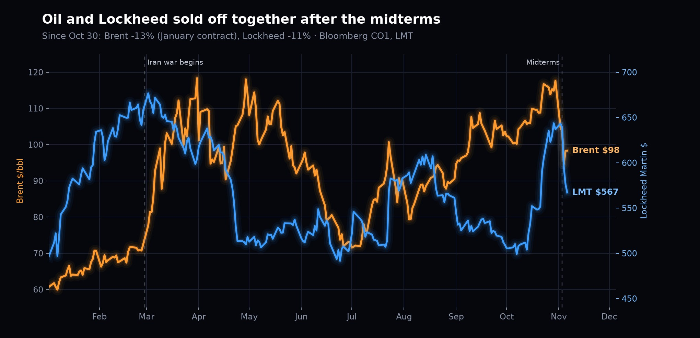
However, smart money continues to sell EURCHF signaling escalation. Ultra high net worth Middle East clients are a real flow into Switzerland here and worth paying attention to.
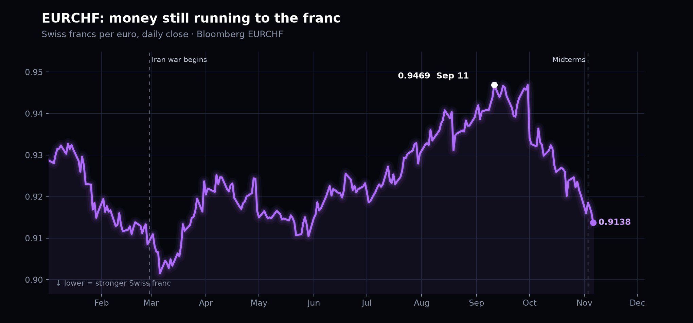
Tehran has put forth an all or nothing 7 condition deal which likely won’t be met. Democrats will take both chambers Jan 3, are already talking about cutting military funding and will push Trump to work with Qatar to lift the US blockade on Iran in exchange for nuclear inspection and further talks.
There’s a stopgap budget that expires Dec 11th that has been funding the war. Susan Collins (R) has warned of “near term solvency challenges” for US forces. Democrats have substantial latitude to end the war - via proactively depriving offensive actions from funding, tightening War Powers rules, and investigating Trump’s financial ties to the war - ranging from his trades to Kushner’s connections highlighted below. Trump has pushed back saying “The war ends when I say it ends.”
Despite the pressure, I don’t think Trump wants his legacy to be that of a loser - a Jimmy Carter but worse figure who crippled his party due to a foreign policy disaster. I put the trades on because I think he will accelerate the bombing of Iran once Jared Kushner wraps up Ukraine war negotiations in Abu Dhabi this week (Nov 10-11). Lunar windows which keep the night sky dark for strikes end around Nov 14, which would be the window. I furthermore expect Trump to not throw Hegseth under the bus tonight on 60 Minutes.
It’s somewhat notable that this timeline combined with a proposed congressional testimony for Jensen Huang re: infidelity with a Chinese spy is a fairly nightmarish set up for Anthropic’s IPO. I’ll cover that in a separate article.
Below I’m including both the catalyst calendars for Iran, Israel and Ukraine as well as oil.
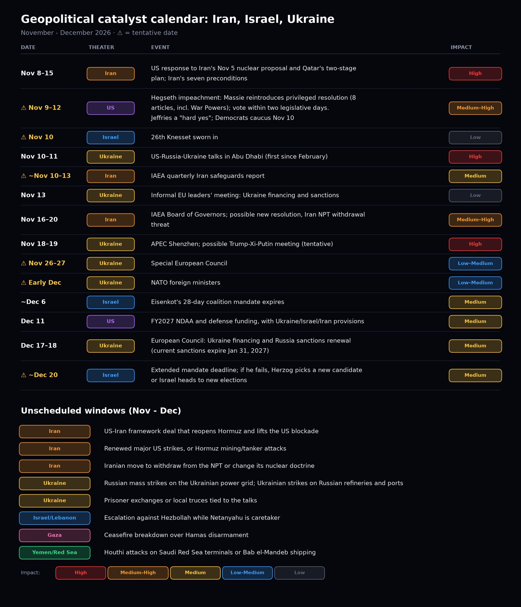
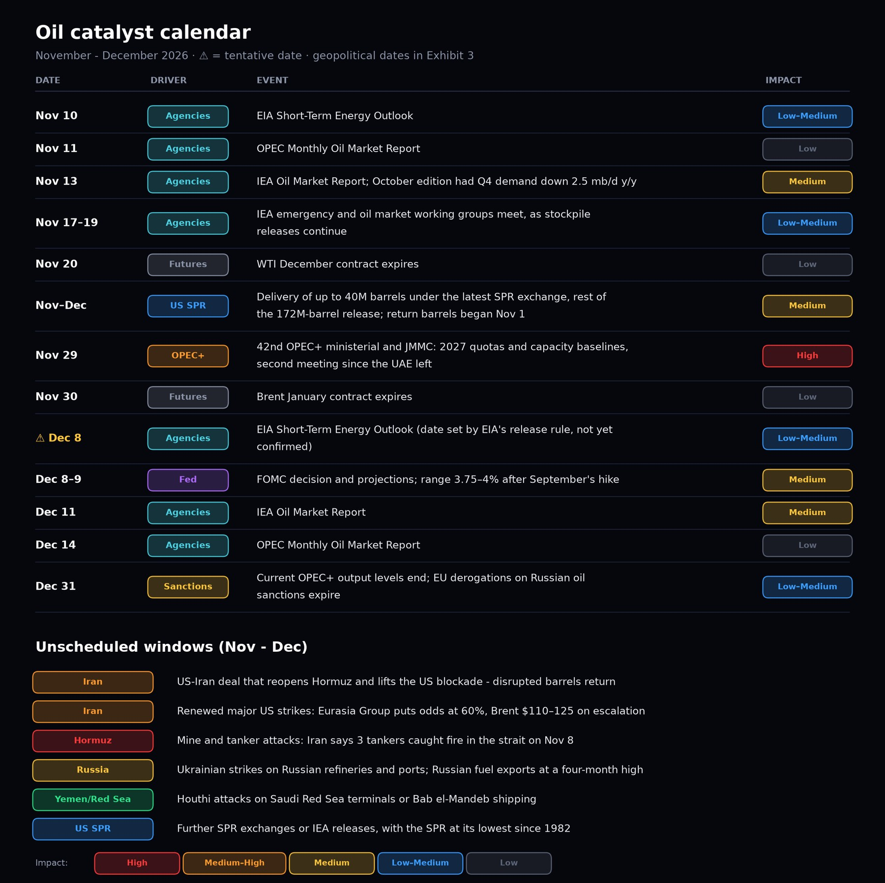
Question 1: What is Trump saying / likely to say? “We’re gonna finish winning, isn’t that right Jared?”
Long story short: I expect Trump to back Hegseth, and it’s likely this goes directly at odds with near term House and Senate actions that kick off this week. I bail on this trade if Trump throws Hegseth under the bus.
People got over-excited about Trump’s anti-war statements. Trump hit Qeshm Island while he was supposed to be concluding Qatari negotiations. Airstrikes hit a Yemen market - killing 30 people, showing escalation between the Saudis and the Iran backed Houthis.
Both the FT and NYT have repeatedly been putting out headlines saying Trump will end the war and that Vance is secretly in control of the agenda. The NYT points to an ‘anonymous source’ which says Stephen Miller’s Chief of Staff appointment was to ‘refocus on the domestic agenda and wind down the war in Iran’.
I do not find this to be credible. Stephen Miller, a far right Jew, has been consistently hawkish.
- In March - he told Hannity that “America First” isn’t isolationism and that the US will be the unmatched world power and “avenge American blood”, citing 47 years of Iranian attacks on Americans.
- He warned Iranians that attacking shipping routes would bring a “hellish price”
- PBS Frontline counted him in “Trump’s war cabinet” along with Hegseth.
- He worked on internal panels to revoke student visas on the basis of antisemitic remarks. And Haaretz (Israeli publication) calls him a “staunch supporter of Israel”.
- Hegseth has tweeted pictures of him and Miller.
When asked about Vance’s statements Trump took a dismissive tone saying “they’re fine” then suggested “maybe he won’t run again”. He also noted that Iranian operations were “continuing” in the same appearance.
Trump’s narrative has consistently been to declare victory:
- “If we didn’t go in there would be no Israel, there would be no Middle East”
- “We’re doing more oil right now through the straits than we did before the war started”
- “It’s not a war. Can’t be a war when for five months nobody was hurt, killed or anything else.”
Re strikes and escalation:
- “We do minor strikes”
- re: nukes: “[Iran] is not doing anything without approval”
- “Do we want to go further and just certify it? I would rather not destroy the rest of the country if possible but maybe I’ll have to. You’ll know soon enough. We’re locked and loaded. If we have to do the rest of the Iran thing, we’re very much locked in.”
The key question is “Does Trump fire Hegseth and de-escalate by replacing him with DeSantis or another moderate?”
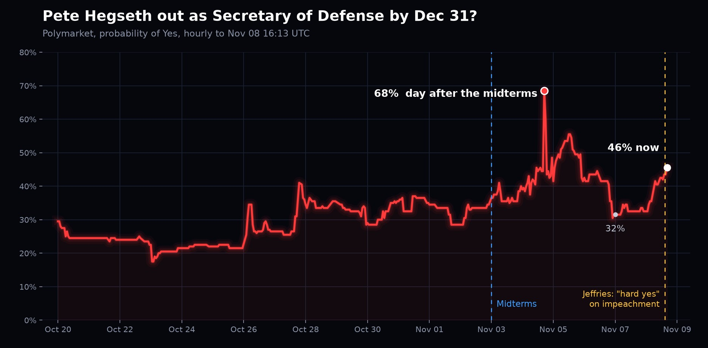
Trump posted a Hegseth video to Truth Social - a war funding inspo video.

A few hours later Hegseth posted the ending on X, cut over footage of him walking with Trump and Vance: “President Trump leads the way. And I’ll assure you, we have only just begun to fight. We are more determined than ever, more resolute than ever to finish what we have started… Godspeed, and keep going.”

Timing-wise: Hakeem Jeffries, the House Democratic leader, told ABC he’s a “hard yes” on impeaching Hegseth. A pivot from what he said 2 days earlier. Republican Thomas Massie will introduce a privileged resolution including violating the War Powers Resolution as early as Monday. Dems meet Tuesday morning. In my view, this only matters if Trump fires Hegseth, throws him under the bus, or pressures him to resign which I don’t think is going to happen.
Vance has been speaking every day to Qatari PM Sheikh Al Thani, Pakistani Army Chief Munir and other mediators. Apparently Jared Kushner is also there (more on this below).
Question 2: Who is in charge in Iran? What is the IRGC asking for? And is resolution likely based on the existing terms? (The military/ everything/ no)
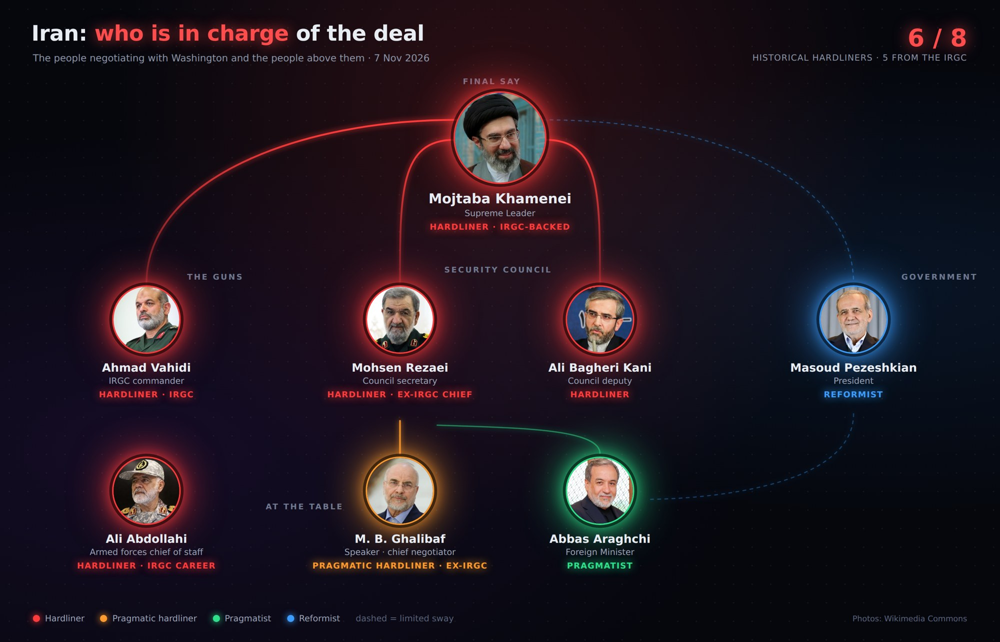
The vast majority of Iranian negotiators are hardliners.
- Mojtaba Khamenei: The decider. Picked in March under IRGC pressure. He’s never held elected office. He told the IRGC chief to prepare “powerful offensive operations”
- Rezaei: controlled the IRGC from 1981-1997. Wanted man in Argentina for the 1994 bombing of a Jewish community center. Vance has been writing letters to him. Repeatedly states he wants Hormuz closed until ‘all 7 conditions are met’
- Kani: deputy to hardline nuclear negotiator Jalili - later panned the 2015 nuclear deal. This week on record saying “no compromises” and “no paper commitments”
- Ghalibaf: former IRGC commander, national police chief. In 1999 he wrote a notorious hard line letter saying to put down student protests.
- Vahidi: first commander of the Quds Force, former IRGC head of intelligence. Both of his predecessors are dead. He’s more extreme.
- Abdollahi: he set out 5 conditions on November 3 and warned of retaliation without “geographic limits”
- Pezeshkian can sign a deal but not deliver it. He doesn’t control the military. His demands match the hardliners’ list.
- Araghchi: Cannot close the deal. Is the messenger.
The IRGC is asking for the following concessions before engaging in nuclear talks:
- Ending the US blockade on Iran’s ports
- Lifting sanctions
- Unfreezing its assets
- Issuing compensation for war damage
- Ending hostilities in the region, including Israel’s operations in Lebanon
It seems very unlikely the US will comply with these demands which have been presented as all or nothing.
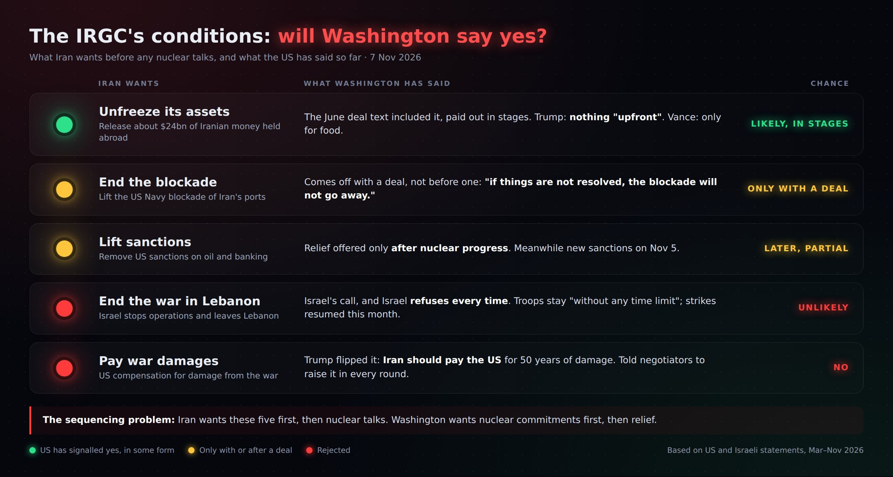
Washington has refused most of this. Trump laughed off reparations, suggesting Iran to pay the US instead. No unfrozen money until Iranian compliance. Blockade stays “if things are not resolved”. Israel has consistently refused to leave Lebanon.

On Hormuz the IRGC has been very explicit. It stays shut until every condition is met:
- IRGC, Nov 8: “Since the early hours of this morning, three non-compliant tankers have exploded and caught fire while they were sailing in the illegal channel in the Strait of Hormuz.” The Guards did not name the tankers. The UK’s UKMTO separately reported a tanker on fire off Khasab, Oman, with the crew evacuated, and another tanker hit by an unknown projectile while transiting outbound on Nov 7.
- IRGC Navy, Nov 6: “The Strait of Hormuz has been closed by the Islamic Revolutionary Guard Corps Navy. Nothing will change until Iran’s seven conditions are met.”
- Rezaei, Nov 5, after meeting Putin: “We have announced seven conditions to the Americans. As long as they do not execute our seven conditions, we will neither open the Strait of Hormuz nor have negotiations.”
- Rezaei, Nov 3: “They must completely and explicitly answer and act upon Iran’s seven conditions... Only in this case will the Strait of Hormuz be reopened.”
- Foreign Ministry spokesman Baghaei, Nov 2: “No final agreement will be formed, and the Strait of Hormuz will not be reopened or secured, unless the U.S. naval blockade is ended and Iran’s legitimate demands are fully implemented.”
- IRGC spokesman Mohebbi, late Oct: “[The strait] will never be opened until the Islamic Republic’s conditions are fully met.”
- Ghalibaf, Oct 4: “[The strait] will not be opened until our seven conditions, based on the Islamabad Memorandum of Understanding, are met.”
- Mohebbi, Aug 26: “If the US does not accept our conditions, the Strait of Hormuz will under no circumstances be reopened.”
- Mohebbi, Aug 9: “Our current strategy is to maintain this strait until the enemy accepts all our conditions... the strait is now actually a theatre of war for us and not just a waterway.”
In August Mohebbi said they could reopen. Baghaei said it could reopen within two days if demands are met.
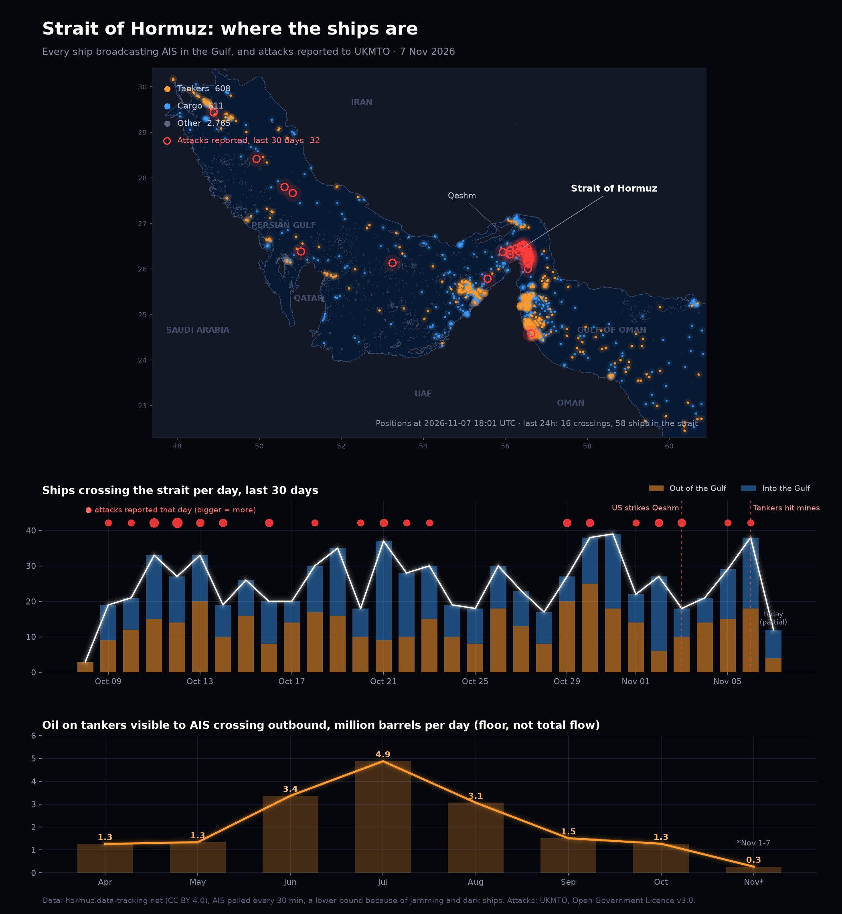
Q3: What does the money say? Saudi/UAE backed Kushner so Trump would use the US military to fight their wars.
It’s been reported that Jared Kushner is now involved in negotiations. Kushner’s Affinity Partners is a $6+ billion fund with 99% of its money from foreign investors. Saudi is the anchor at $2 billion. Trump previously said “Steve and Jared” convinced him Iran was about to attack - something Trump’s departing counterterrorism chief Joe Kent disputed in his resignation letter: “Iran posed no imminent threat to our nation.” Affinity is the largest shareholder in Phoenix Financial, which has $456 million invested in Israeli defense companies. Saudi pushed for the war and the UAE has urged “more decisive action” on Iran. Both are major backers of Affinity.
It’s notable that Jared Kushner is involved in negotiations now as he’s the guy who kicked this off to begin with, something which I think is underrated.

Kushner and Trump’s financial interests are clearly tied up in the Middle East, with nations who directly benefit from the US fighting on their behalf. Kushner being out in the Middle East til Wednesday, however - means it’s pretty unlikely things blow up until then.
I believe the narrative Trump wants to sell is “Jared and Melania brought peace to Ukraine and now we’re finishing up with Iran”
FLOTUS on X, Nov 6: the Oleshky ceasefire and "humanitarian diplomacy"
Q4: What’s up with Saudi, the Houthis and Aramco? Markets are getting bombed. It is getting worse.
The Saudi-Houthi war has become the main active front.
- Nov 7: Airstrikes hit homes in al-Shariya, a village about 10 miles from Sanaa, killing at least 27 and wounding 36, mostly women and children, according to the Houthi-run Health Ministry, which blamed Saudi Arabia. The Houthis say they attacked Saudi Arabia in response. Saudi did not comment.
- Nov 6: 30 killed in a strike on a market in southern Yemen. The Houthis and Yemen’s Saudi-backed military each blame the other. Saudi intercepted two Houthi ballistic missiles aimed at Najran and a drone over the Mecca region.
- Nov 5: Two coalition strikes on Sanaa killed seven, per the Houthi Health Ministry. Saudi intercepted a missile aimed at the Medina region and issued danger alerts for Yanbu.
- On the ground: Yemeni government forces are advancing on the Houthis in Taiz, and the Houthis have launched small raids on Saudi border posts.
The truce fell apart over the summer. The UN says more than 1,600 people have been killed and more than 300,000 displaced since fighting resumed.
With regards to oil, the bigger issue is Aramco.
With Hormuz shut, the 1,200 km East-West pipeline from the eastern oil fields to Yanbu on the Red Sea has become Saudi’s main export route - Yanbu went from about 1 million barrels a day to 4-4.9 million. It keeps getting hit:
- April: an Iranian drone hit a pumping station and cut about 700,000 barrels a day. Restored within three days.
- Sept 10-11: drones launched from Iraq hit pumping stations and Saudi shut the whole line. Flows were halted from Sept 11 to 22.
- Oct 4: a pumping station at Khurais was hit. AFP’s source said “big damage” and the line stopped again. Reuters’ source said oil was still flowing.
- Oct 24-27: the Houthis claimed strikes on pumping stations, Aramco’s Yanbu facility and the Rabigh refinery. Saudi has not confirmed them.
- Nov 5: danger alerts for Yanbu as Houthi attacks continue.
Long story short: there is no real sign of decreased hostilities with regards to Saudi Arabia which does not portend well for peace.
Thinking about the incentives: Saudi should logically want Trump to deal with Iran for him now before it is too late:
- MBS is trying to portray himself as a business genius and leader in AI
- If he has to pivot to being a military leader, it hurts the economy, damages his cash cow which is already facing production disruptions
- And leaves him heavily isolated with a Democratic House and Senate who think of him as a guy who kills dissenters vs Kushner who views him as an LP
Q5: Will Trump De-Escalate Because of Stonks? (no)
After the Rose Garden absurdity it is worth mentioning that Trump cares deeply about the markets, potentially far in excess of the coherence of his foreign policy objectives.
The first mitigating factor is that Trump wants to tell a story of Democrats ruining markets.
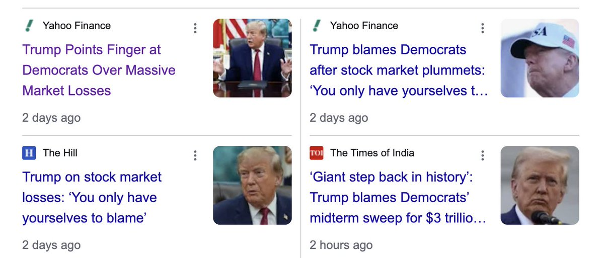
But even for Trump this is a hard narrative to sell. During the midterms he pointed out that business is quite strong in spite of the war - and public market executives or GDP figures don’t really contradict this.
Gasoline is $4.15 a gallon vs $3.02 a year ago with jet fuel up even more, but demand remains strong. Delta, Southwest, American and United all guided Q4 with robust consumers - “we don’t see any sign at this point that fares coming up are eroding customer demand in any way,” Robert Jordan of Southwest said after jacking prices up 27%. Similar comments are broad based.

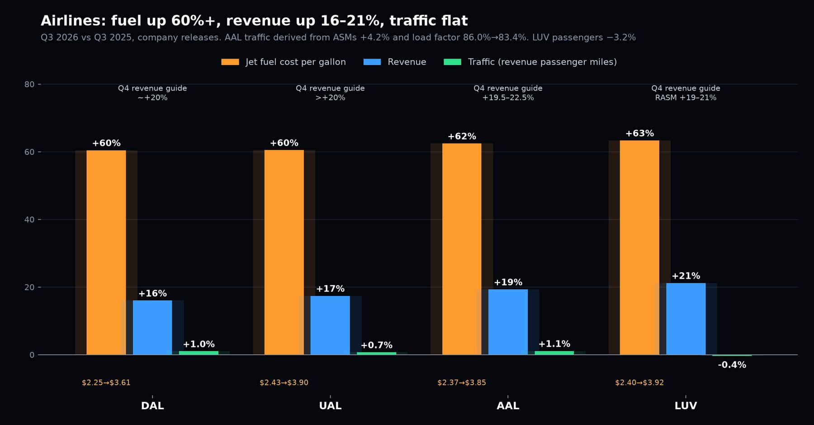
Jobs and growth are holding up. October payrolls +165k, unemployment 4.1% (down from 4.5% last November), Q3 GDP +3.4% annualized and September retail sales +0.8%.
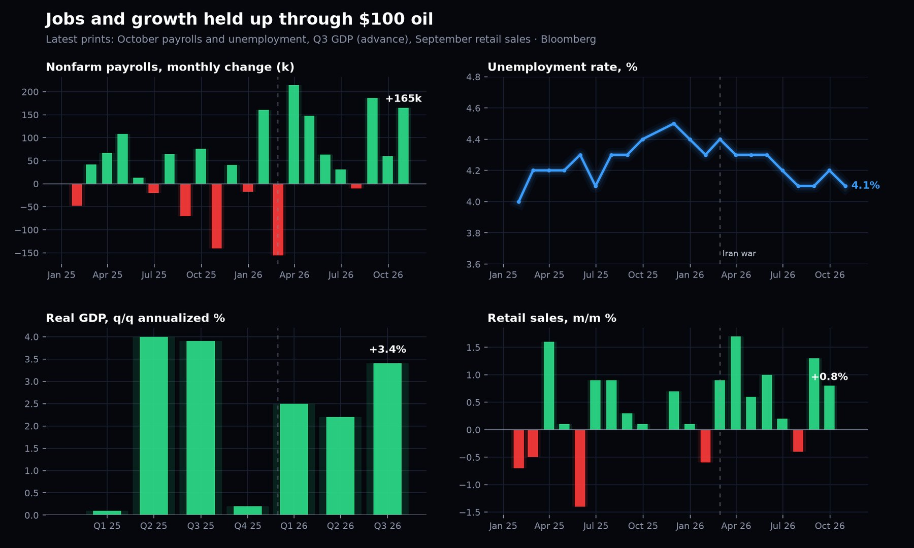
Even in the most fuel sensitive sector - airlines / cruise, you’re seeing minimal demand destruction. Since the war started, Q4 revenue consensus is up 11% for the airlines, flat for hotels and travel, and down 2% for cruise. Airlines are now expected to grow Q4 revenue 13-26% vs last year, up from 7-11% before the war.
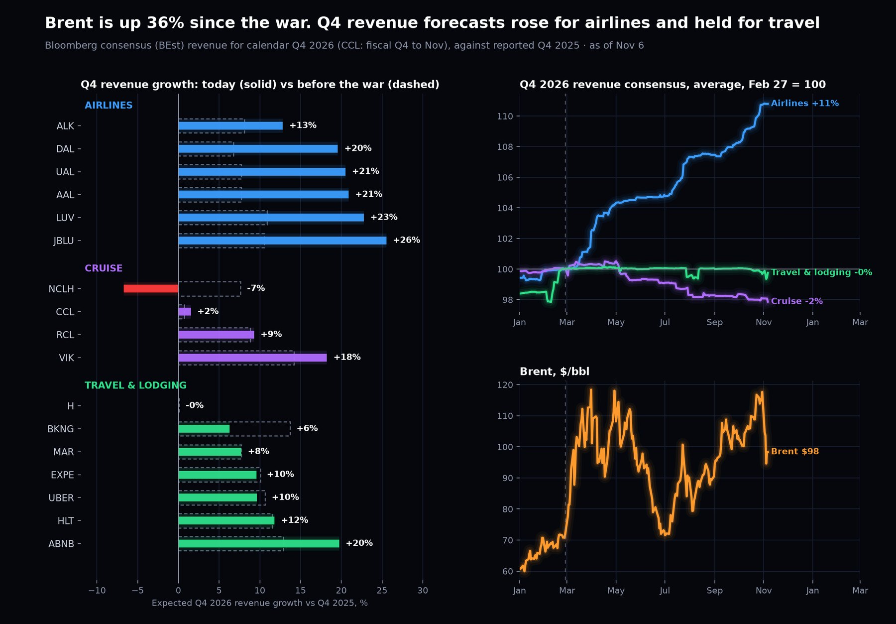
The picture of conference travel, and leisure are both extremely strong with Airbnb leading the pack. Airbnb is growing bookings 21% - a huge acceleration vs before the war. Marriott has raised full year guidance twice, and is seeing revenue per room +7.4% higher vs a year ago in the US and Canada. Royal Caribbean is signaling that bookings are up 15% or so with 2027 at similar rates. Carnival (the lowest end) isn’t growing as fast but still saw customer deposits +7% and raised guidance.

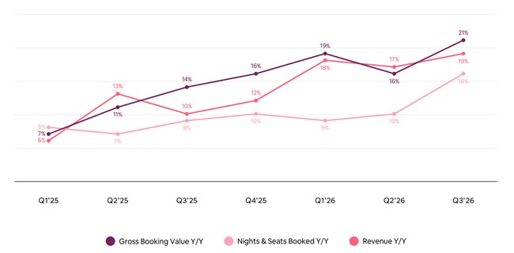
Q6: What about the rumored ‘fortune’ oil companies are making? Are they expanding capacity? (no)
There isn’t strong evidence of anything like the shale era oversupply from oil majors. Aramco is obviously seeing disrupted production. Exxon and Chevron are producing less than a year ago (-5.7% and -2.6%) and spending less to drill in the US. Exxon’s US upstream capex is down 12% this year and full-year spend is tracking its plan; it isn’t holding a December plan event and will just reaffirm 2027 targets by press release. Chevron cut US upstream capex 30% in Q3 on lower Permian spend, will finish 2026 at the low end of its capex guidance and sets the 2027 budget in December. The Permian has gone “from growth to managing at the plateau” - Mike Wirth, Chevron CEO.
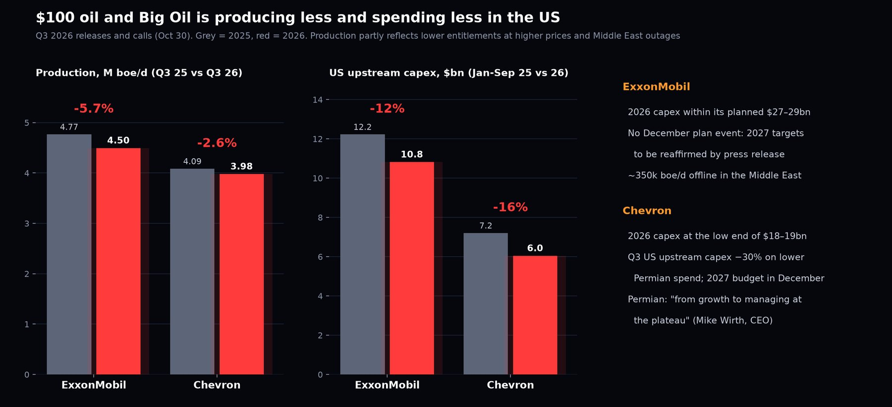
And the government’s buffer is mostly spent. The Strategic Petroleum Reserve has been drawn down from 415 million barrels before the war to 282 million - its lowest level since 1982.

It genuinely doesn’t seem like there is something that is going to cause fuel price sensitivity to send oil lower.
So overall we have a picture of:
- A fairly strong economy that so far has shown the ability to outright absorb oil price increases with strong employment
- Supply discipline at the oil majors
- Declining ability of the Federal government to release SPR oil into the market
This is in part what is driving the risk reward of the trade.
Q7: With regards to war escalation, what is the implication of Eisenkot gaining over Netanyahu? (very little)
The Israeli political environment is important to monitor because it’s part of Iran’s war demands. Netanyahu is still prime minister - and his likely replacement, Eisenkot is a former IDF chief of staff who lost a son and two nephews in Gaza. He calls Iranian nuclear breakout Israel’s most serious strategic threat, wants Hamas military and governing capacity destroyed and opposes a Palestinian state.
He will certainly be less cavalier than Netanyahu and more likely to collaborate with dems, but he’s hardly a dove. The US is withdrawing support but per my earlier articles has already sent enough weapons to Israel for a multi month strike.
Today, Defense Minister Israel Katz said Iran is attempting to renew efforts to acquire nuclear weapons and that the mission against Iran isn’t completed yet: “We cannot tolerate these threats. The State of Israel is determined today, more than ever, to stand firm regarding its own destiny, to take preemptive action, and to pursue a proactive, offensive policy against our enemies.”

Q8: What’s up with Ukraine? This Might Be A Sigh of Relief - delays stuff til late this week
Ukrainian bonds have rallied to a 13.6% yield in the past week on excitement something good comes in Abu Dhabi this week. US-mediated talks between Ukraine and Russia are scheduled in Abu Dhabi next week, November 10-11. Witkoff and Kushner lead for the US. Putin aide Vladimir Medinsky leads for Russia. Here’s the timeline so far:

- Jan 23-24 and Feb 4-5: the first two rounds of US-brokered trilateral talks, both in Abu Dhabi.
- Feb 28: the US and Israel launch the war on Iran. The Ukraine talks stall.
- October: Putin meets Witkoff in St Petersburg and agrees to a new round.
- Nov 2: Witkoff announces the Abu Dhabi talks will “focus on post-war security arrangements, de-escalation, humanitarian efforts and next steps toward peace.”
- Nov 3: the Kremlin confirms. Overnight Russia strikes across Ukraine, killing dozens, and Moscow says it downed nearly 500 drones heading for the capital region.
- Oct 30-Nov 6: Ukraine hits six Russian refineries in a week, after a two-week pause in October that coincided with Trump’s calls for calm before the midterms. Yanos, a 300,000 barrel a day plant that supplies Moscow, halted after a Nov 3 strike.
- October: Russian fuel exports hit a four-month high of 1.32 million barrels a day after Trump and Putin agreed to relax Russia’s diesel export ban. Trump says he will “take a look” at the law that bars unloading Russian fuel in the US.
- This week: US negotiators meet France, Germany, Britain, the EU and NATO in Brussels on Ukraine’s security guarantees and reconstruction. Zelensky says he hopes Abu Dhabi leads to a face-to-face meeting with Putin.
The two sides are still far apart on terms, and Trump has been pressing Ukraine to make a deal. Notably: Kushner will be here. If there’s a face to face Putin meeting scheduled, that would be a Ukrainian war de-escalation but if anything I think this would be an outcome that makes Trump more likely to attack Iran. “Jared told me to go in to Iran. Jared is credible on Ukraine. Jared is telling me to clean it up.” etc
If oil dips on a Ukraine resolution I will likely add.
Q9: Is Vance somehow secretly in charge? The obvious successor? (give me a break)
Nick Fuentes - part of the blackpilling movement that led 66% of young men under 30 to vote Democrat - pointed out that Vance coming out against the war in hindsight after they lost kind of defeats the point
Thiel - Vance’s previous employer and financier noted “it will be very hard for either Vance or Rubio to win”. This isn’t something you say if you think he’s a shoo-in. If Vance were secretly in control of Trump’s agenda, I do not think Thiel would be blackpilling.

Q10: Trade Structuring: how do you play this?
Long Oil, short AAPL, TSLA, SPCX. The thinking is that war is not bullish because it makes Democratic sweep in 2028 more likely, hurts Trump’s allies (Musk) and de-rates consensus longs with deteriorating earnings (AAPL).

The catalysts to look out for are near term discussions of bipartisan data center bills in Texas (would be +ve SPCX).
Here is the catalyst calendar for the short side.
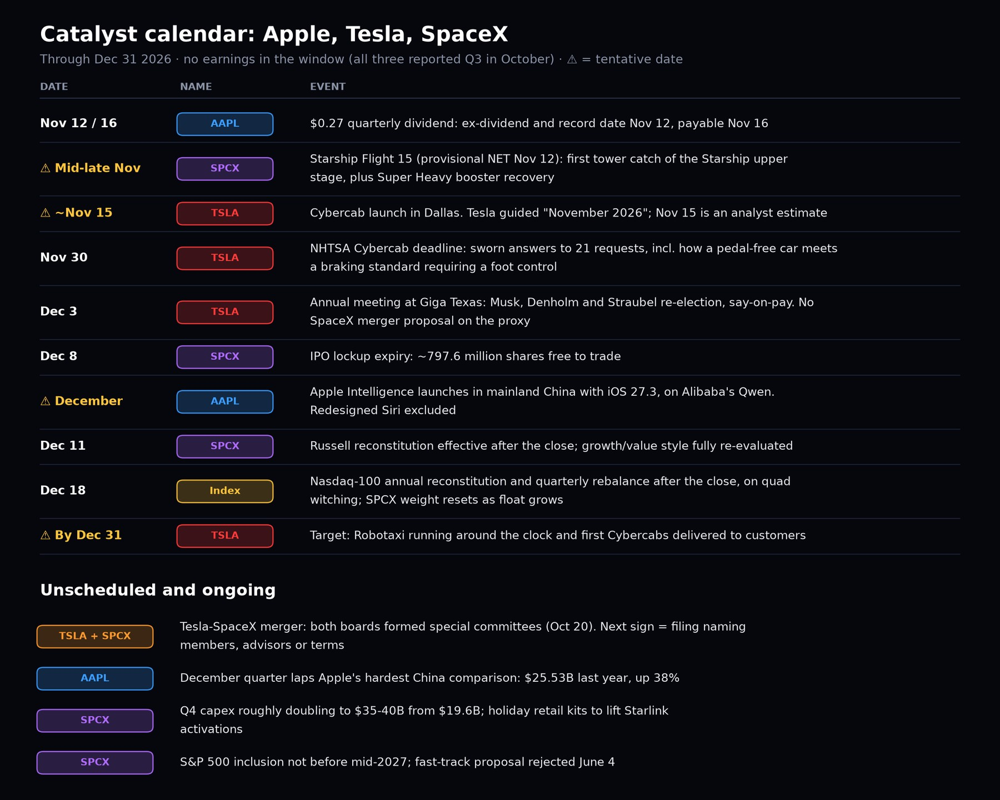
Oil has three other key things going for it:
- The only risk-off asset. It is the least correlated asset to US stocks. Treasuries and Gold are positively correlated. And over a 5 year basis, this is also true.
- An underweight inflation hedge. Meanwhile, family offices hold 17x more bonds than commodities while Pensions are at about 4x overweight. Core PCE inflation has been above the Fed’s 2% target for 67 straight months.
- Positive carry. Backwardation and tight supply means you get about 23% rolling oil futures.
1. The only risk-off asset
Oil is also the least correlated asset to US stocks. Over five years Brent's weekly correlation with the S&P 500 is 0.05, vs 0.16 for gold and 0.13 for Treasuries. Since the war it has turned negative (-0.35), while gold (0.47) and Treasuries (0.27) have moved with stocks.
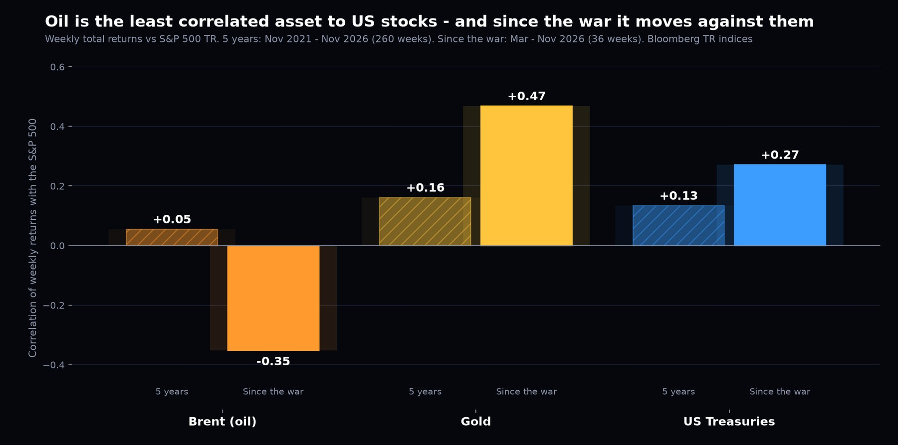
2. An underweight inflation hedge
Elon Musk and Apple are part of the American exceptionalism trade that has led to massive inflows into the US relative to the rest of the world. Since 2020, $1.14 trillion has gone into the four biggest US index ETFs (VOO, VTI, IVV and SPY) vs $331bn into the six biggest international ones.

Passive indexing studies cover the worldwide equity risk premium, not a specific country. The $1.1 trillion of inflows since 2020 are $300-400bn+ in excess of any passive allocation logic, and could reverse if US political risk changes or its superpower status comes under question.
The same goes for commodities. Family offices hold 17% of their portfolios in fixed income and 1% in commodities (UBS Global Family Office Report 2026), and US public pensions hold 23.8% in fixed income vs 5.2% in commodities and other assets. Commodities have returned 60% over five years and 108% over ten, while US bonds are down 1% over five years and up 16% over ten. Core PCE inflation has been above the Fed's 2% target for 67 straight months.
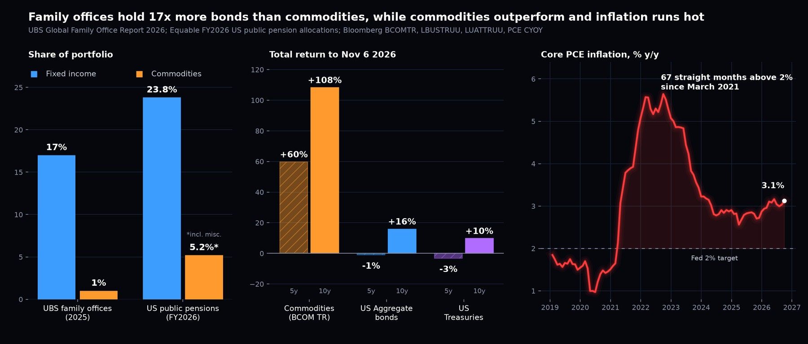
Long-term allocations aren't short-term trade catalysts, but they are the backdrop for a geopolitical re-rating. There's low evidence of US demand destruction, which is relevant to Trump's decision, and no evidence of a supply glut, oil executives sound disciplined on expanding production, and correlations support oil as a risk-off asset in a fracturing, increasingly violent world. Performance is one part of the equation, and it gives a structural tailwind.
3. Positive carry
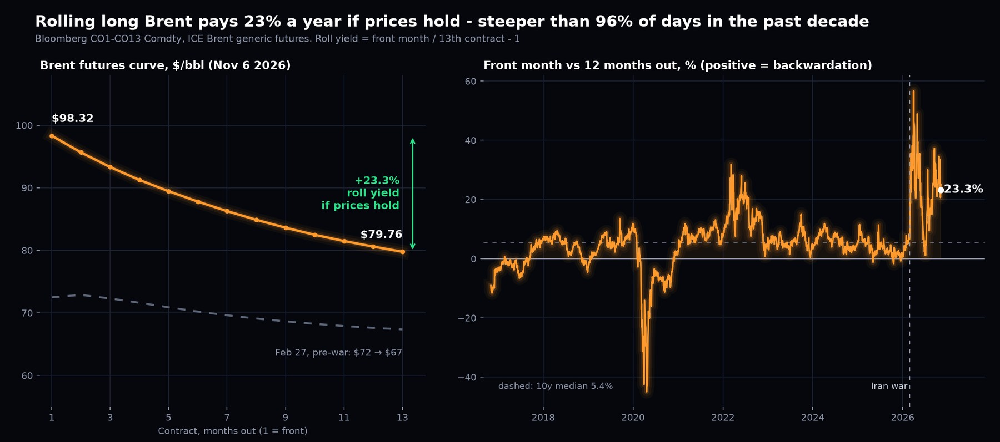
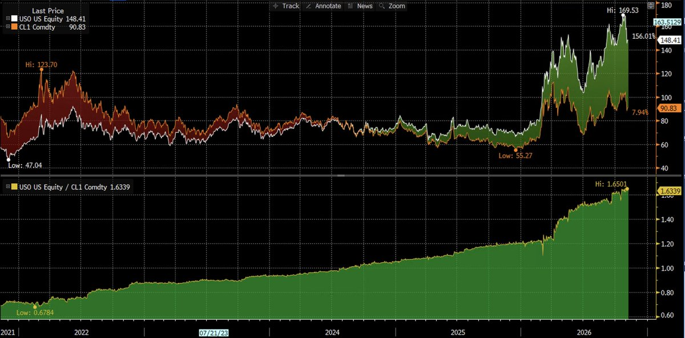
Q11: My coins are dying bro. When do I buy? Crypto Update
One more wick then up only.
The simple TLDR is that the Binance hacker still has about $1B of ETH they will likely convert into BTC. XRPBTC has been wicking down because they’ve unloaded $56m but they have $114m more to go. This is a bit concerning given how liquid XRP is - and there have been decent positive updates from Ripple regarding Hidden Road (Swell was standing room only / well attended and Tradeweb came to speak on fixed income). So it’s not a great liquidity environment to sell $1b of crypto.
Existing sales and swaps are about $1.2B - 33% of the $3.58b unfrozen. So there’s about 529,652 ETH to go.
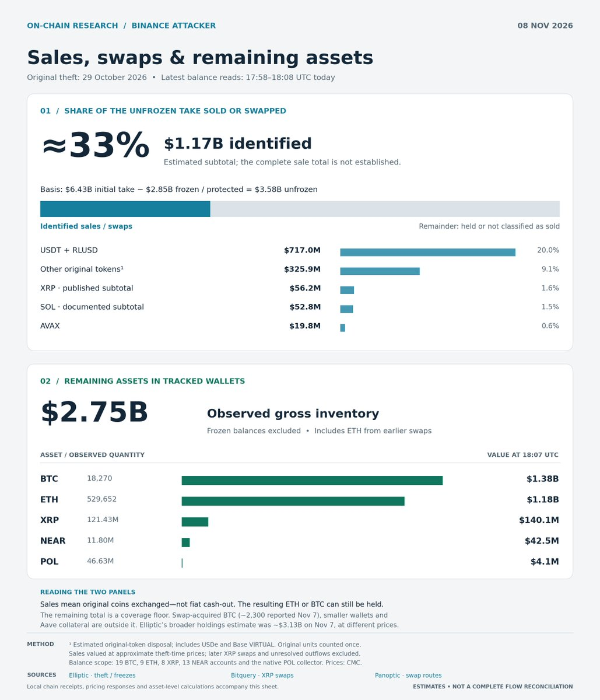
My thinking owning BTC and XMR is that these are unlikely to sell off or outright will see buying pressure. But after the ETH gets sold -- I’ll be a lot more amenable to buying altcoins. I think the Senate dems will be focused on World Liberty Financial and Trump crypto sales far more than other coins but am following Elizabeth Warren closely.
If you want to track this in real time paste this instruction guide hosted at the gist below to your agent (obviously feel free to scan for dicey things etc first):
https://gist.github.com/goodalexander/5d276645c6bc9ac8e0d38087711eae3f#file-00-start-here-txt
Conclusion:
Read this article. American society is a clown car run by a reality TV president, who was the superior option to a walking corpse. We’re in a failed war with a 3rd world nation, with Mexican white nationalist influencers suppressing male turnout. “Punish the right so they respect us by allowing mass migration that will permanently reconfigure electoral maps.” Is genuinely one of the worst plans of all time.
Capital will leave the system.
Fiat has never made less sense, and we are at max despair in crypto. Hacker sales are probably going to real privacy coins (XMR) and store of value assets (BTC) and then alt coins will get a mechanical bounce and be worth chasing.
Sources
- USO US Equity / CL1 Comdty ratio: Bloomberg
- FLOTUS on X, Nov 6
https://x.com/FLOTUS/status/2118819005159145692 - Fuentes Updates on X, Nov 5
https://x.com/FuentesUpdates/status/2118231048308044216 - Binance attacker sheet: Elliptic (theft, freezes), Bitquery (XRP swaps), Panoptic (swap routes); balances read Nov 8 17:58-18:08 UTC, prices CMC
- Brent crude front-month: Bloomberg CO1 Comdty; Lockheed Martin: LMT US Equity; EURCHF Curncy
- AFP, Nov 8: Iran says 3 tankers caught fire in Hormuz
- Bloomberg News, Nov 8: UK Navy Says Tanker Struck by Projectile While Transiting Hormuz
- Bloomberg News, Nov 8: Katz: Iran Attempting to Renew Efforts to Acquire Nuclear Arms
- Bloomberg News, Nov 6: Oil Plunges But Markets Aren't Out of Jeopardy Yet: Energy Daily
- Bloomberg News, Nov 6: Oil Swings as Traders Parse Iran War De-Escalation Prospects
- WSJ editorial board: Democrats May Defund the Troops
https://www.wsj.com/opinion/democrats-may-defund-the-troops-f1ba6094 - Congressional Research Service R48887: U.S. Conflict with Iran
https://www.congress.gov/crs-product/R48887 - Polymarket: Pete Hegseth out as Secretary of Defense by December 31?
https://polymarket.com/event/pete-hegseth-out-as-secretary-of-defense-by-december-31 - Polymarket: Presidential Election Winner 2028
https://polymarket.com/event/presidential-election-winner-2028 - Hegseth on X
https://x.com/PeteHegseth/status/2118794500994957459/photo/1 - Fuentes on JD Vance
https://x.com/FuentesUpdates/status/2118231048308044216 - Iran International: Mojtaba Khamenei named Supreme Leader
https://www.iranintl.com/en/202603030390 - Al Jazeera: Iran's new military appointments (Vahidi)
https://www.aljazeera.com/news/2026/8/11/whats-behind-irans-new-military-appointments-and-what-do-they-indicate - Wikipedia: Ali Bagheri
https://en.wikipedia.org/wiki/Ali_Bagheri - IranWire: We won't rely on US paper commitments this time
https://iranwire.com/en/news/159896-senior-iranian-official-we-wont-rely-on-us-paper-commitments-this-time/ - UANI: Mohammad Bagher Ghalibaf
https://www.unitedagainstnucleariran.com/mohammad-bagher-ghalibaf-speaker-of-irans-parliament - Radio Farda: Soleimani involved in protest crackdowns (1999 letter)
https://en.radiofarda.com/a/soleimani-was-involved-in-protest-crackdowns-former-guard-commander-says/30426580.html - Al Jazeera: Iran commander sets out five conditions (Nov 3)
https://www.aljazeera.com/news/2026/11/3/iran-commander-sets-out-five-conditions-for-regional-security - Al Jazeera: Iran says US reply unconvincing; Trump confirms strikes (Nov 4)
https://www.aljazeera.com/news/2026/11/4/iran-says-us-reply-to-hormuz-plan-unconvincing-trump-confirms-strikes - Axios: Vance leads push for new Iran deal
https://www.axios.com/2026/11/06/vance-leads-push-new-iran-deal - NPR: Trump dismissing Iran's demands for war damages
https://www.npr.org/2026/08/11/g-s1-138200/trump-iran-war-damages - CBS: Vance denies Iran will receive billions in assets
https://www.cbsnews.com/news/vance-iran-deal-billions-of-dollars-in-assets-cbs-mornings-interview/ - IBTimes: sanctions relief tied to nuclear progress
https://www.ibtimes.co.uk/trump-links-iran-sanctions-relief-nuclear-progress-1822491 - Times of Israel: Israel won't be bound by Iran deal, stays in south Lebanon
https://www.timesofisrael.com/israel-vows-to-stay-in-south-lebanon-if-iran-strikes-well-hit-it-with-full-force/ - Al Jazeera: Netanyahu says ceasefire does not include Lebanon
https://www.aljazeera.com/news/2026/4/8/netanyahu-says-us-iran-ceasefire-does-not-include-lebanon - PBS: US and Iran call off talks over fighting in Lebanon
https://www.pbs.org/newshour/world/israel-and-hezbollah-renew-ceasefire-after-u-s-and-iran-call-off-talks-over-fighting-in-lebanon - Tasnim: Two tankers hit mines in Strait of Hormuz, IRGC (Nov 6)
https://www.tasnimnews.ir/en/news/2026/11/06/3741632/two-tankers-hit-mines-in-strait-of-hormuz-irgc - News.az: Iran tells Putin Hormuz closed until US meets seven conditions
https://news.az/news/iran-t-ells-putin-strait-of-hormuz-will-remain-closed-until-us-meets-seven-conditions - Press TV: Hormuz won't reopen until conditions met (Nov 3)
https://www.presstv.co.uk/Detail/2026/11/03/779867/unconvincing-snsc-chief-rejects-us-response-to-demands-says-hormuz-wont-reopen-until-conditions-met - Famagusta Gazette: Hormuz can reopen in 2 days if US meets demands
https://famagusta-gazette.com/hormuz-strait-can-be-reopened-in-2-days-if-u-s-meets-its-demands-iran-says/ - News.az: IRGC reiterates conditions for opening Hormuz
https://news.az/news/iran-s-irgc-reiterates-conditions-for-opening-strait-of-hormuz - Al Jazeera: Hormuz to remain closed until US meets conditions (Oct 4)
https://www.aljazeera.com/news/2026/10/4/iran-says-strait-of-hormuz-to-remain-closed-until-us-meets-conditions - Press TV: Hormuz won't reopen unless US accepts conditions, IRGC (Aug 26)
https://www.presstv.co.uk/Detail/2026/08/26/775116/Strait-of-Hormuz-won%E2%80%99t-reopen-unless-US-accepts-Iran-conditions-IRGC-spokesperson - Polymarket: US-Iran Final Nuclear Deal by...?
https://polymarket.com/event/us-iran-final-nuclear-deal-by-20260621201254412 - Al-Monitor / Reuters: US to mediate trilateral talks in Abu Dhabi next week
https://www.al-monitor.com/originals/2026/11/us-mediate-trilateral-talks-ukraine-russia-abu-dhabi-next-week-us-envoy-says - RTE: Russia confirms Ukraine-US talks in Abu Dhabi next week
https://www.rte.ie/news/2026/1103/1597730-ukraine/ - The Moscow Times: US-mediated Ukraine peace talks to resume in Abu Dhabi
https://www.themoscowtimes.com/2026/11/03/us-mediated-ukraine-peace-talks-to-resume-in-abu-dhabi-next-week-a94160 - Latin Times: talks resume in Abu Dhabi after a nine-month pause
https://www.latintimes.com/us-mediate-russia-ukraine-talks-abu-dhabi-600870 - Ukraine 4.5% 2036 bond price: Bloomberg YV463914 Corp
- Bloomberg News, Nov 6: Kyiv Hits Sixth Russian Oil Plant in Week as Strikes Pick Up
- Bloomberg First Word, Nov 6: Russia's Major Yanos Oil Refinery Halted Operations After Strike
- Bloomberg News, Nov 6: Russia Fuel Flows Hit Four-Month High as Diesel Curbs Eased
- Bloomberg News, Nov 6: OPEC Output Neared Pre-War Levels on Saudi Rebound, Survey Shows
- Bloomberg News, Nov 6: India's HPCL Says Booking Tankers for Hormuz Still Complicated
- Al Jazeera: Israel's president picks Eisenkot over Netanyahu
https://www.aljazeera.com/news/2026/11/7/israels-president-picks-eisenkot-over-netanyahu-to-form-next-government - NPR: Israel's president taps opposition candidate to form a government
https://www.npr.org/2026/11/07/g-s1-152536/netanyahu-israel-government-eisenkot-herzog - CNN: Eisenkot to be tasked with forming next Israeli government
https://www.cnn.com/2026/11/07/middleeast/eisenkot-israel-government-latam-intl - Washington Post: Eisenkot tapped to form government
https://www.washingtonpost.com/world/2026/11/07/israeli-president-taps-ex-general-eisenkot-opponent-netanyahu-form-government/ - Times of Israel: Trump says US to end $4 billion in annual military aid
https://www.timesofisrael.com/trump-says-us-to-end-4-billion-in-annual-military-aid-to-israel-by-end-of-2026/ - The National: Trump says US will end $4bn in annual military aid to Israel
https://www.thenationalnews.com/news/us/2026/11/03/trump-says-us-will-end-4bn-in-annual-military-aid-to-israel/ - Polymarket: Israel x Iran ceasefire continues through...?
https://polymarket.com/event/israel-x-iran-ceasefire-continues-throughptptpt-20260716224448963 - Polymarket: Prime Minister of Israel after the next election?
https://polymarket.com/event/who-will-be-the-next-prime-minister-of-israel-after-the-next-election - Polymarket: Iran full airspace closure by...?
https://polymarket.com/event/iran-full-airspace-closure-byptptpt-20260625195253028 - Strait of Hormuz Ship Monitor (ship positions, daily crossings, oil exports; CC BY 4.0)
https://hormuz.data-tracking.net/ - UKMTO maritime security incident reports (Open Government Licence v3.0)
https://www.ukmto.org/ - Middle East Eye: IRGC won't reopen Hormuz until US accepts all conditions
https://www.middleeasteye.net/live-blog/live-blog-update/irgc-says-wont-reopen-hormuz-until-us-accepts-all-irans-conditions - CNN: Top Democrat investigating Kushner's investments (Phoenix, $456m)
https://edition.cnn.com/2026/10/06/politics/jared-kushner-israeli-investments-invs - The Hill: Kushner pushes back on CNN report
https://thehill.com/homenews/administration/6127113-kushner-denies-cnn-israel-investment-report/ - Forbes: Kushner rejects CNN report
https://www.forbes.com/sites/saradorn/2026/10/02/kushner-rejects-cnn-report-that-his-israeli-diplomacy-might-benefit-his-private-equity-fund/ - Fox News: White House responds after top counterterrorism official (Joe Kent) quits
https://www.foxnews.com/politics/white-house-after-top-counterterrorism-official-quits-says-trump-had-strong-evidence-iran-would-attack-us.amp - PBS: outgoing counterterrorism official says Iran posed no imminent threat
https://www.pbs.org/newshour/politics/watch-johnson-refutes-outgoing-counterterrorism-officials-claim-that-iran-posed-no-imminent-threat - Raw Story / The New Yorker: 'Total malpractice', unprepared negotiators
https://www.rawstory.com/jared-kushner-2677860719/ - AP via WHEC: Airstrikes kill more than 2 dozen near Yemen's capital
https://www.whec.com/ap-top-news/airstrikes-kill-more-than-2-dozen-people-near-yemens-capital-houthis-say/ - The New Arab: Houthis say 27 killed in Saudi strikes on Sanaa province
https://www.newarab.com/news/houthis-say-27-killed-saudi-strikes-yemens-sanaa-province - Emirates 24|7: Saudi warns of danger in Yanbu as Houthi attacks continue
https://www.emirates247.com/world/saudi-arabia-warns-of-potential-danger-in-yanbu-oil-hub-as-houthi-attacks-continue/7484 - OilPrice: Aramco restores East-West pipeline as war risk closes in on Yanbu
https://oilprice.com/Energy/Energy-General/Aramco-Restores-East-West-Pipeline-as-War-Risk-Closes-In-on-Yanbu.html - L'Orient Today: Houthis say they attacked Aramco facilities in Yanbu
https://today.lorientlejour.com/article/1547742/yemens-houthis-say-they-attacked-aramco-facilities-in-yanbu-no-saudi-confirmation.html - Wikipedia: East-West Crude Oil Pipeline
https://en.wikipedia.org/wiki/East%E2%80%93West_Crude_Oil_Pipeline - US fuel demand: EIA Weekly Petroleum Status Report, product supplied of finished motor gasoline and kerosene-type jet fuel; US crude field production
- EIA weekly US regular retail gasoline price
https://www.eia.gov/dnav/pet/hist/LeafHandler.ashx?n=PET&s=EMM_EPMR_PTE_NUS_DPG&f=W - Bloomberg: NY Harbor jet fuel (JETINYPR Index), Brent (CO1 Comdty), BEst consensus revenue for Q4 2026, nonfarm payrolls (NFP TCH), unemployment (USURTOT), real GDP (GDP CQOQ), retail sales (RSTAMOM)
- Delta Q3 2026 results
https://www.prnewswire.com/news-releases/delta-air-lines-announces-september-quarter-2026-financial-results-302903456.html - Delta Q3 2026 call transcript
https://stockanalysis.com/stocks/dal/transcripts/707287-q3-2026/ - Reuters via Hydrocarbon Processing: Delta slashes profit forecast as fuel cost surge outstrips fare gains
https://www.hydrocarbonprocessing.com/news/2026/10/delta-air-slashes-profit-forecast-as-6-billion-fuel-cost-surge-outstrips-fare-gains/ - United Q3 2026 results
https://www.sec.gov/Archives/edgar/data/0000100517/000010051726000184/ual_erx09302026xex991.htm - United Q3 2026 call transcript
https://www.fool.com/earnings/call-transcripts/2026/10/21/united-ual-q3-2026-earnings-call-transcript/ - American Q3 2026 results
https://www.sec.gov/Archives/edgar/data/0000006201/000000620126000064/a8kerexhibit991q3-26.htm - American Q3 2026 call transcript
https://www.fool.com/earnings/call-transcripts/2026/10/22/american-airlines-aal-q3-2026-earnings-call-transcript/ - Southwest Q3 2026 results
https://www.sec.gov/Archives/edgar/data/0000092380/000009238026000104/er-9302026xerdoc.htm - Airbnb Q3 2026 shareholder letter
https://www.sec.gov/Archives/edgar/data/0001559720/000119312526449727/d437988dex991.htm - Marriott Q3 2026 results
https://www.sec.gov/Archives/edgar/data/0001048286/000104828626000040/mar-2026q3xex99earningsrel.htm - Marriott Q3 2026 call transcript
https://www.fool.com/earnings/call-transcripts/2026/11/02/marriott-mar-q3-2026-earnings-call-transcript/ - Hilton Q3 2026 results
https://stories.hilton.com/releases/hilton-reports-2026-third-quarter-results - Royal Caribbean Q3 2026 results
https://www.sec.gov/Archives/edgar/data/0000884887/000088488726000042/a2026q3earningsrelease.htm - Royal Caribbean Q3 2026 call transcript
https://www.fool.com/earnings/call-transcripts/2026/10/27/royal-caribbean-rcl-q3-2026-earnings-call-transcript/ - Carnival Q3 2026 results
https://www.carnivalcorp.com/wp-content/uploads/2026/03/2026-3Q-Earnings-Release-Final-Draft.pdf - Carnival Q3 2026 call transcript
https://www.fool.com/earnings/call-transcripts/2026/09/30/carnival-ccl-q3-2026-earnings-call-transcript/ - Norwegian Cruise Line Q3 2026 results
https://www.sec.gov/Archives/edgar/data/0001513761/000117184326006957/exh_991.htm - ExxonMobil Q3 2026 results
https://www.sec.gov/Archives/edgar/data/0002115436/000211543626000018/livef8k3q26991.htm - Chevron Q3 2026 results
https://www.sec.gov/Archives/edgar/data/0000093410/000009341026000196/a09302026ex9918-k.htm - Chevron Q3 2026 call transcript
https://www.fool.com/earnings/call-transcripts/2026/10/30/chevron-cvx-q3-2026-earnings-call-transcript/ - Truth Social, Nov 7: Trump posts Hegseth video
https://truthsocial.com/@realDonaldTrump/117577381997659473 - Truth Social, Nov 5: “The Stock Market suffered one of the Worst Days in History based on the results of the Election”
https://truthsocial.com/@realDonaldTrump/117566389105992268 - Truth Social, Nov 5: “The Stock Market crashed today because the Dumocrats had a big Tuesday”
https://truthsocial.com/@realDonaldTrump/117566560747501657 - Pete Hegseth on X, Nov 7: “Godspeed, and keep going” video
https://x.com/PeteHegseth/status/2119224692871749688 - Valuations: Bloomberg BEst consensus (next 12 months) for free cash flow, net income and sales; market caps in USD, Nov 7 2026. S&P 500 from its 503 members; MSCI World and world ex-US rebuilt from developed-market members of the Bloomberg World Large & Mid Cap index
- Correlations: weekly total returns, Bloomberg SPXT, BCOMCOT (Brent), BCOMGCTR (gold), LUATTRUU (US Treasuries), Nov 2021 - Nov 2026
- Strategic Petroleum Reserve: EIA Weekly Petroleum Status Report, ending stocks of crude oil in SPR
- ETF flows: Bloomberg FUND_FLOW for VOO, VTI, IVV, SPY, VXUS, VEA, IEFA, EFA, VWO, IEMG, Jan 2020 - Nov 6 2026
- UBS Global Family Office Report 2026
https://www.ubs.com/global/en/media/display-page-ndp/en-20260528-global-family-office-report-2026.html - Equable via ai-CIO: Fiscal 2026 set to be another strong year for pension fund performance
https://www.ai-cio.com/news/fiscal-2026-set-to-be-another-strong-year-for-pension-fund-performance/ - Returns and inflation: Bloomberg BCOMTR (commodities), LBUSTRUU (US Aggregate), LUATTRUU (US Treasuries) total return indices to Nov 6 2026; PCE CYOY Index (core PCE, % y/y) to Sep 2026
- Brent carry: Bloomberg CO1-CO13 Comdty (ICE Brent generic futures), Nov 6 2026 and Feb 27 2026; 3-month T-bill USGG3M Index
- OPEC: 42nd OPEC and non-OPEC Ministerial Meeting and 69th JMMC, Nov 29 2026; MOMR release dates
https://www.opec.org/monthly-oil-market-report.html - CNBC: OPEC+ keeps December oil output targets steady ahead of tougher call for 2027
https://www.cnbc.com/2026/10/31/opec-oil-output-targets-december.html - IEA Oil Market Report release schedule
https://www.iea.org/data-and-statistics/data-product/oil-market-report-omr - EIA Short-Term Energy Outlook data browser (next release dates)
https://www.eia.gov/outlooks/steo/data/browser/ - DOE: Energy Department continues execution of Strategic Reserve release commitments
https://www.energy.gov/articles/united-states-energy-department-continues-execution-strategic-reserve-release-commitments - Federal Reserve FOMC calendar
https://www.federalreserve.gov/monetarypolicy/fomccalendars.htm - Futures expiries: Bloomberg LAST_TRADEABLE_DT for CLZ6 and COF7 Comdty
- ABC News: ‘I'm a hard yes’: Hakeem Jeffries announces support for Hegseth impeachment
https://abcnews.com/Politics/im-hard-hakeem-jeffries-announces-support-hegseth-impeachment/story?id=137952235 - Aaron Rupar on X, Nov 8: Jeffries on This Week
https://x.com/atrupar/status/2119444975553511810 - NPR: ‘He's got to go’: Hakeem Jeffries calls for Hegseth's removal but stops short of impeachment (Nov 6)
https://www.npr.org/2026/11/06/nx-s1-6030799/democrats-ran-on-affordability-how-will-the-party-make-it-happen - Polymarket: Pete Hegseth impeached by December 31, 2026?
https://polymarket.com/event/pete-hegseth-impeached-by-june-30 - Doeswijk, Lam & Swinkels (2014), The Global Multi-Asset Market Portfolio, Financial Analysts Journal
https://papers.ssrn.com/sol3/papers.cfm?abstract_id=2352932
More commentary
All commentary
Intel, Sandisk, AWS, Binance. Shake it up. Add some Geopolitics. Why not?
Intel which is now down 29% this morning changed the story from "2027 is funded by operations" to that it's probably funded by debt and equity…

One Last Midnight Opting Out of a Raw Deal: Long Coins Short Stocks
Cryptocurrency is running higher. Stocks are stalling. I think it's time for the big run in coins vs equities and the crypto market now has the infra…

Is CoreWeave Going to Die
No. Coreweave I do not think is going to die. I think Anthropic roadshow will do better than expects due to Fable 5.5 lifting sentiment on Lab…